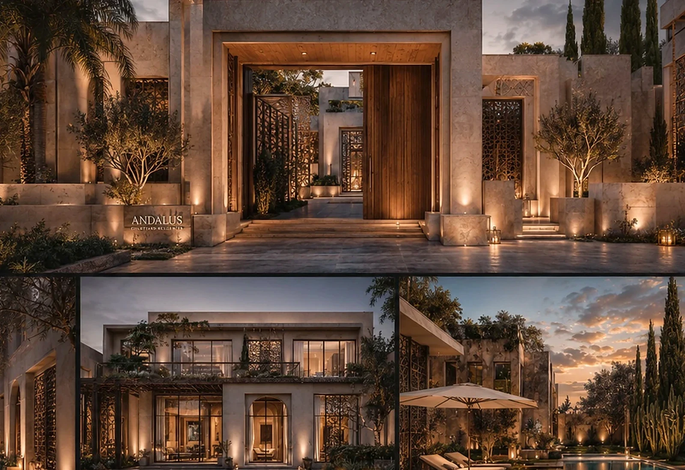
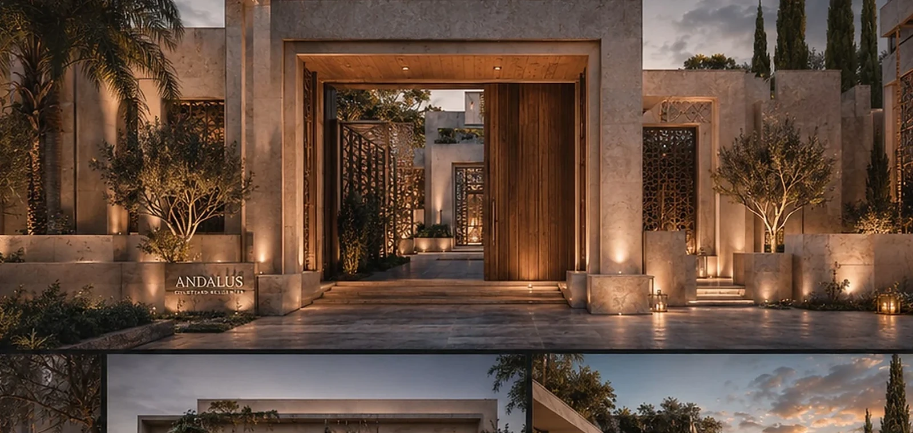
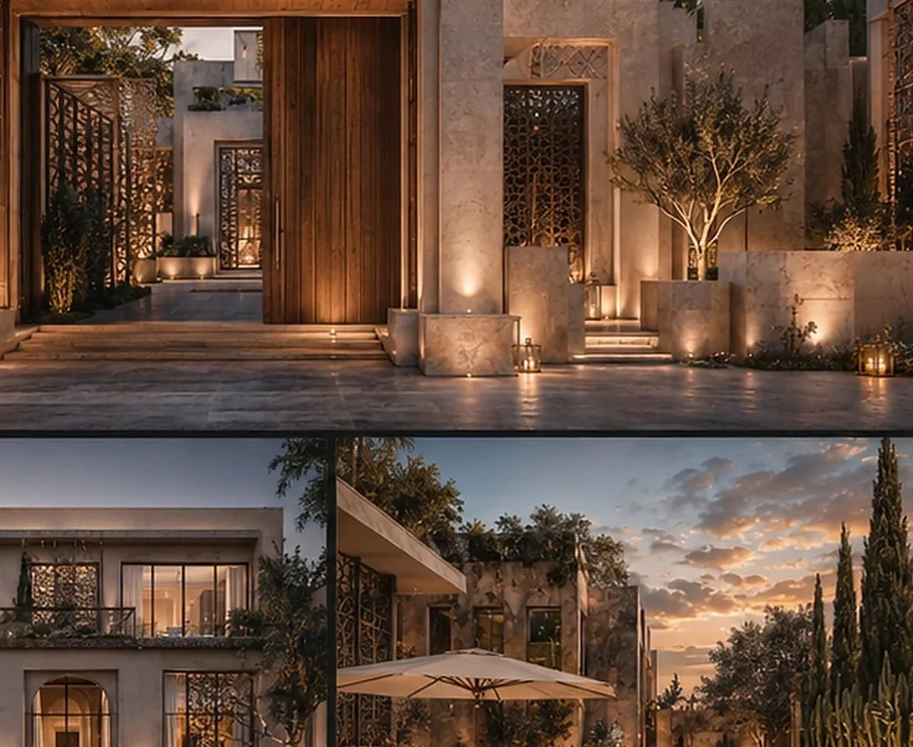
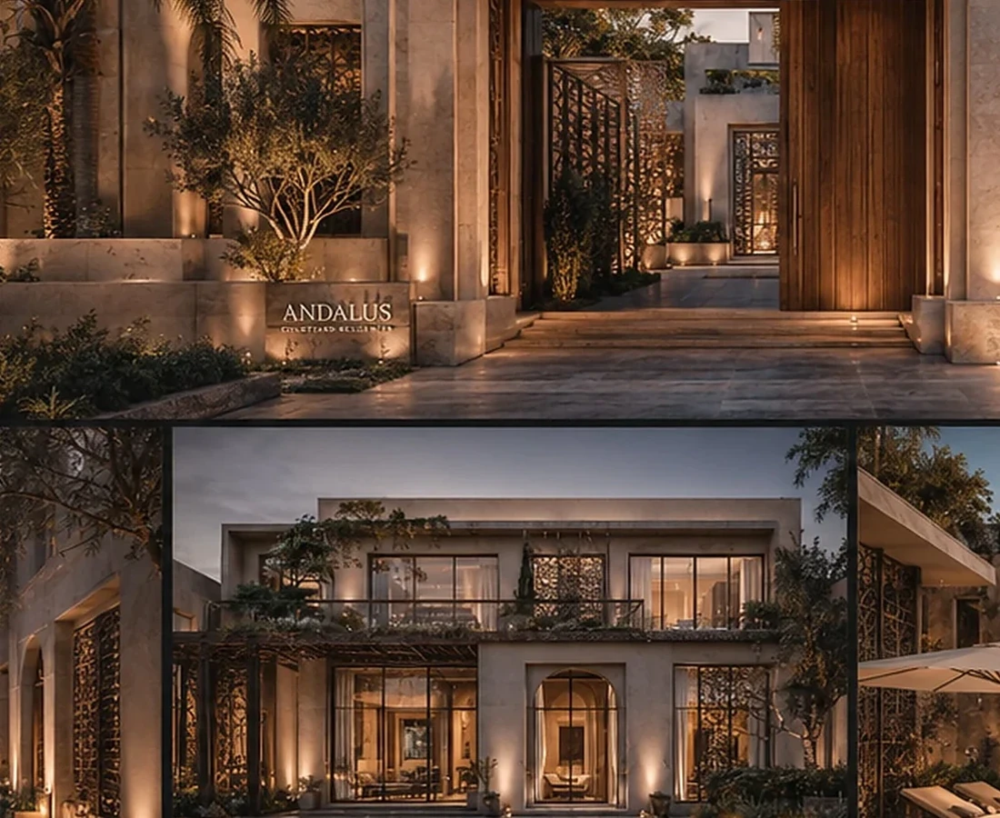

Contemporary Family Living Organised Around the Courtyard.
The project reinterprets regional spatial memory through privacy, shade, warm materiality and a clear arrival sequence.
LocationCairo, EgyptYear2024TypologyResidential / Courtyard Homes

A CASE OF THINKING
READ THE PROJECT AS A SEQUENCE OF DEVELOPMENT DECISIONS.
The fields below form BADR's standard case-study lens. Project-specific commercial claims should be replaced only when they are supported by the project record.
THE DEVELOPMENT QUESTION
How can a residential product feel contemporary while retaining the spatial intelligence of regional courtyard living?
THE GOVERNING IDEA
Use the courtyard as the organiser of privacy, light, community and identity.
THE DESIGN RESPONSE
Arches, shaded courts, warm stone and layered boundaries create a sense of permanence while keeping living spaces open to light and landscape.
THE SIGNATURE
A recognisable courtyard language and layered threshold experience.
WHY IT MATTERS
The architecture creates a coherent residential identity without depending on superficial decoration.
Design Direction
A project identity shaped by place, typology and experience.
Arches, shaded courts, warm stone and layered boundaries create a sense of permanence while keeping the living experience open to light and landscape.
Project narrative is based on the supplied BADR portfolio record and visible design material.



A New Development Opportunity
Your Site Deserves a Development Strategy Before It Becomes a Drawing Package.